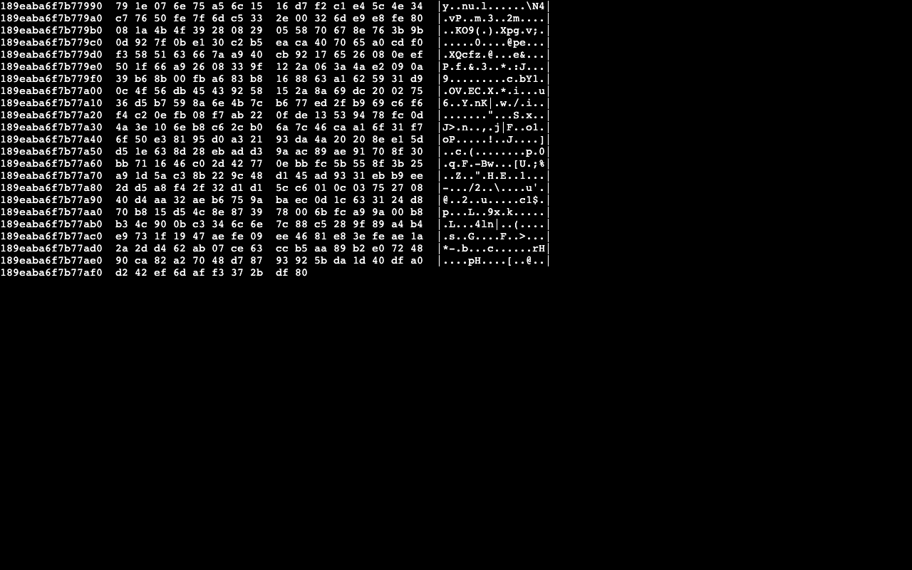
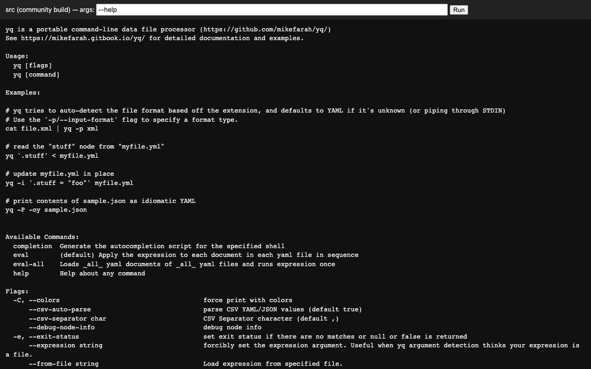

Can open-source GitHub projects become mini-apps on your phone automatically, with nobody rewriting a line of code? Before building anything, we measured it on 20 real projects.
Des projets open source de GitHub peuvent-ils devenir des mini-apps sur téléphone automatiquement, sans réécrire une ligne de code ? Avant de construire quoi que ce soit, nous l'avons mesuré sur 20 vrais projets.
One shell app for iPhone, iPad, Android, Mac and the browser that runs open-source projects as small sandboxed mini-apps, rebuilt automatically every week. The original authors' code is the app. App Store rules allow this only for HTML, JavaScript and WebAssembly mini-apps that the host indexes, rates and can remove, so everything must compile to the web.
Une seule app pour iPhone, iPad, Android, Mac et le navigateur, qui fait tourner des projets open source comme de petites mini-apps isolées, reconstruites automatiquement chaque semaine. Le code des auteurs d'origine est l'app. Les règles de l'App Store ne l'autorisent que pour des mini-apps HTML, JavaScript et WebAssembly que l'app hôte répertorie, classe et peut retirer : tout doit donc compiler pour le web.
| Language | Langage | Worked | Ont marché | What stopped the rest | Ce qui a bloqué les autres |
|---|---|---|---|---|---|
| Python | 2 / 3 | one dependency has no web version | une dépendance n'existe pas pour le web | ||
| C / C++ | 1 / 2 | code that only compiles with one compiler | du code qui ne compile qu'avec un seul compilateur | ||
| Go | 1 / 3 | terminal and process features the web doesn't have | des fonctions de terminal et de processus absentes du web | ||
| Rust | 1 / 5 | system features, bundled C libraries | fonctions système, bibliothèques C intégrées | ||
| JavaScript / TypeScript | 0 / 6 | installs that break, server-only apps, files loaded from other sites | installations qui échouent, apps serveur, fichiers chargés depuis d'autres sites | ||
| Swift | 0 / 1 | no Swift-to-web compiler set up | pas de compilateur Swift vers le web installé |


25% is too low to build an app for "any GitHub project", but promising for a narrower one: web apps, Python tools, and Go and Rust tools that don't depend on the operating system. Phase 1b tests 100 projects with three factory fixes and a pre-filter. The shell app gets built only if at least 40% are genuinely usable.
25 % c'est trop peu pour une app « n'importe quel projet GitHub », mais prometteur pour un cadre plus étroit : apps web, outils Python, et outils Go et Rust qui ne dépendent pas du système d'exploitation. La phase 1b teste 100 projets avec trois corrections de l'usine et un pré-filtre. L'app ne sera construite que si au moins 40 % sont vraiment utilisables.